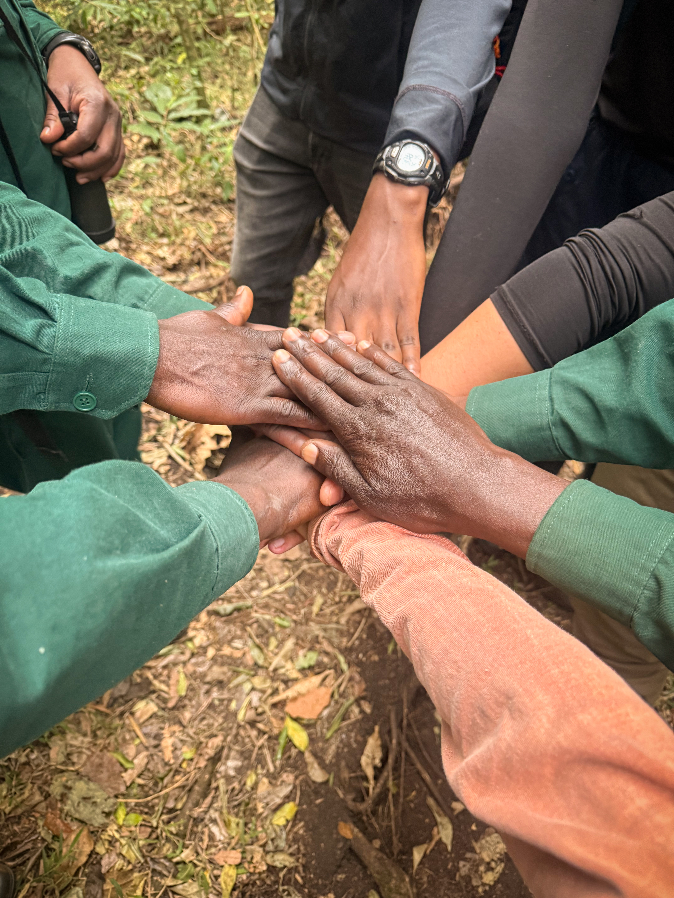
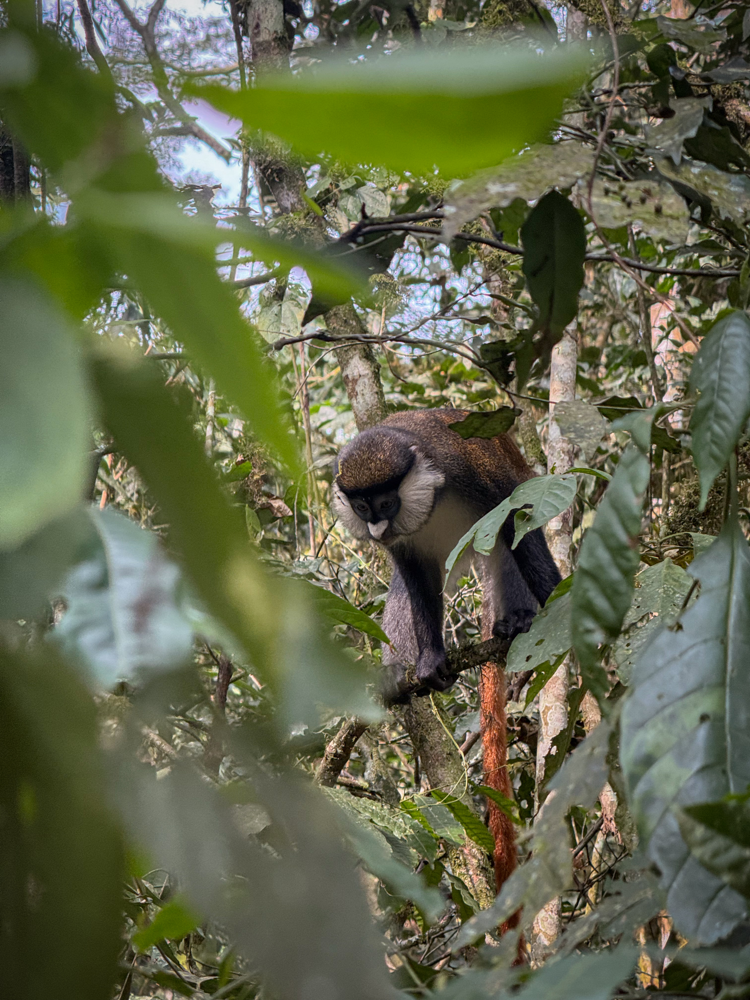
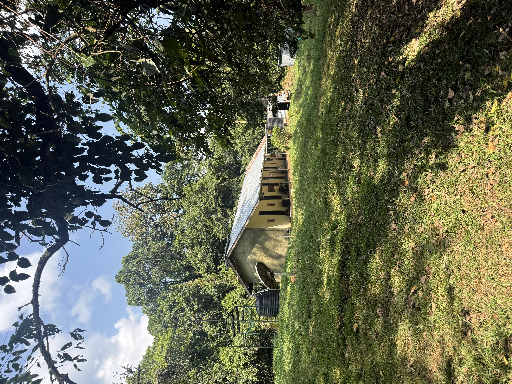
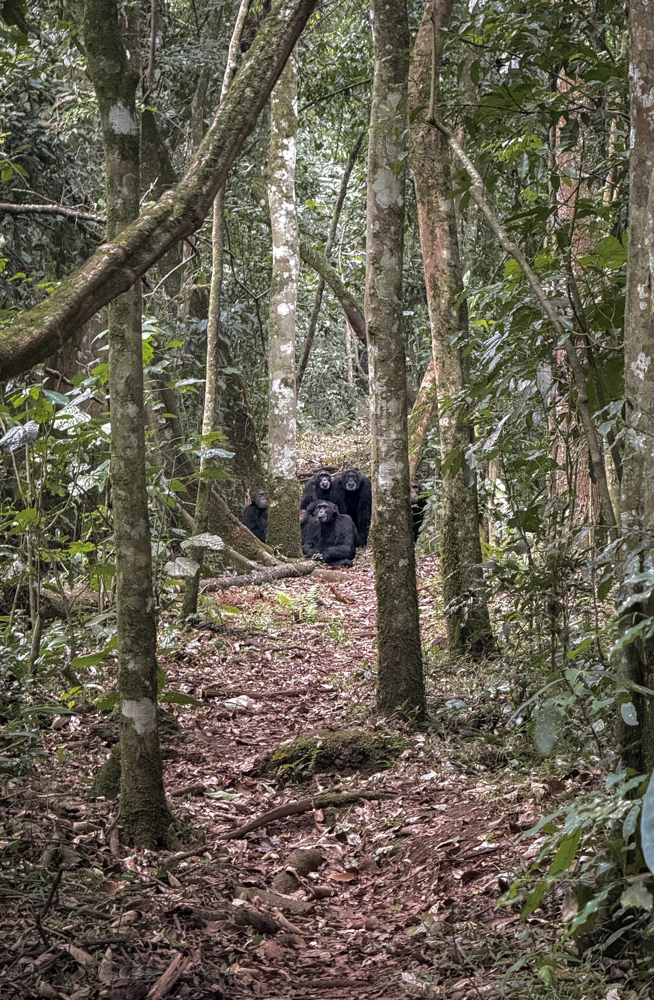
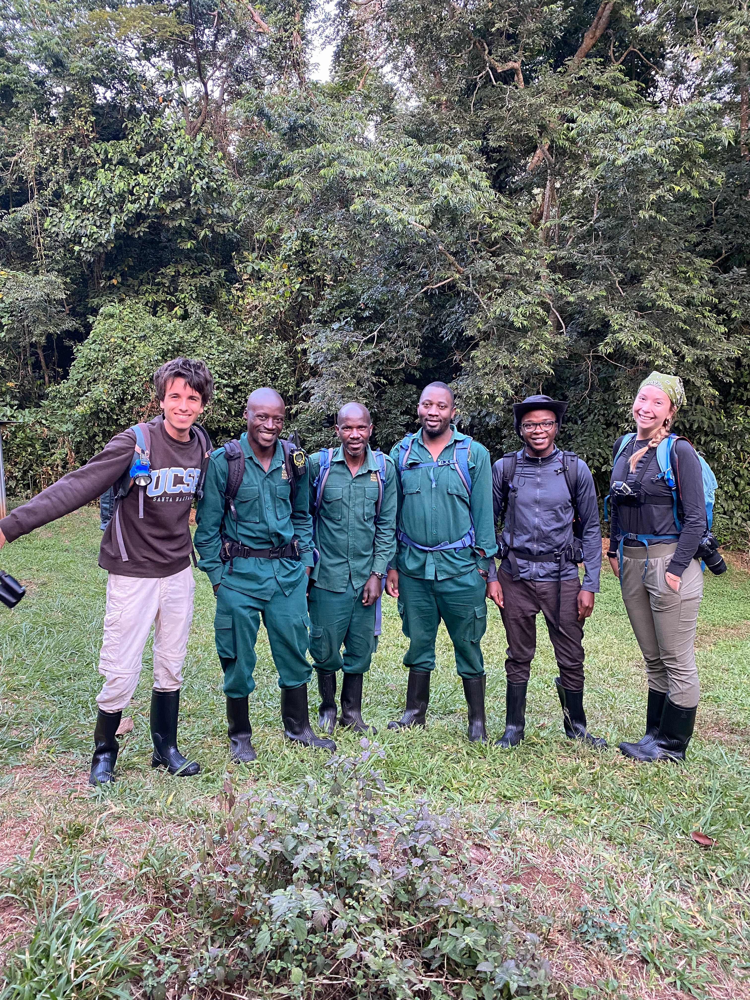
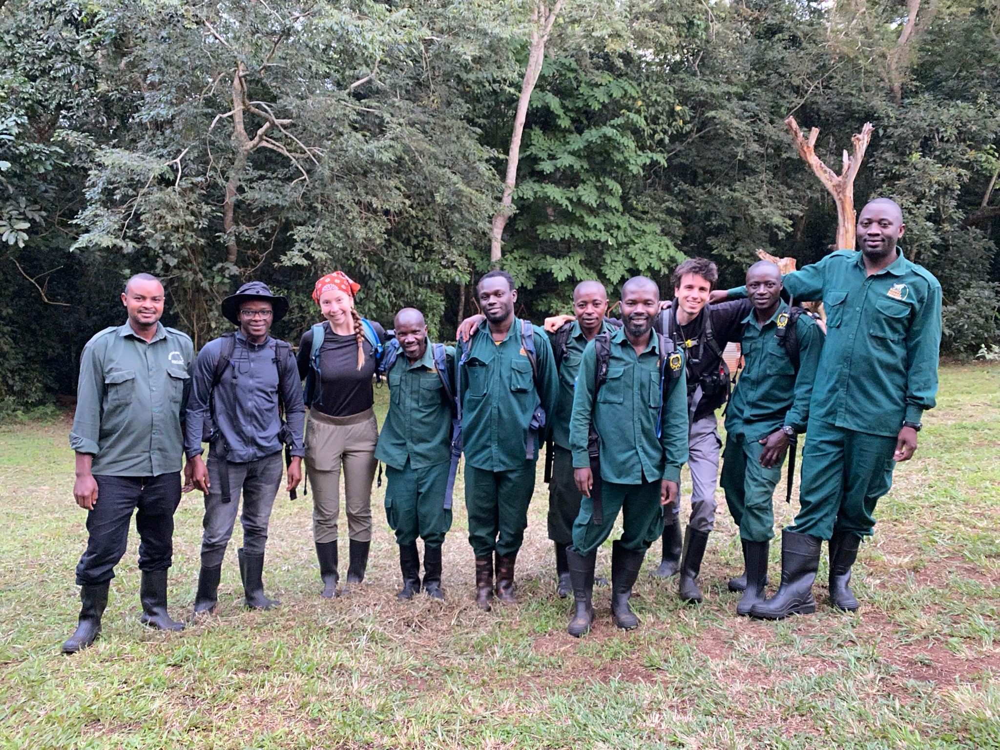

Behavioral ecology · Uganda
Ngogo Monkey Project
Three months studying female participation in intergroup encounters among wild red-tailed monkeys in Kibale National Park.
A different kind of fieldwork
Joining the Ngogo Monkey Project has been one of the most impactful fieldwork experiences of my life thus far. It was a departure from the archaeological fieldwork of previous seasons and introduced me to a different kind of research.
As a research assistant, my principal duties included collecting and processing behavioral observation data and occasionally collecting non-invasive samples. Directed by Professor Michelle Brown of the University of Minnesota, the fieldwork contributed to a joint project between Minnesota and UC Santa Barbara.

Observing intergroup encounters
Working with UCSB PhD student Janine-Rose Klein, I helped investigate the behavior of female red-tailed monkeys and their participation in intergroup engagements. During timed 15-minute observation periods, we recorded movement, grooming, proximity to other group members, infant suckling, and foraging through video, audio recording, and field notes.
We simulated intergroup encounters using a concealed speaker that played previously recorded aggression calls from neighboring red-tailed monkey groups, then documented each focal female’s response. Expert field assistants helped us track the groups and identify individuals. Across the season, we observed three habituated groups that varied in size and territorial extent.

Life at Ngogo
Each work session began with a week-long quarantine to protect Ngogo’s chimpanzees from human-borne disease; we used that time to process behavioral data. The following two weeks were spent in the field, waking before sunrise and trekking to the focal group’s territory for morning observations.
Finding a group could require hours of bushwhacking through dense forest, and some days it was never found. Territorial forest elephants, chimpanzees that hunt red-tails, group movement, heavy rain, and difficult terrain could all alter data collection. We lived in tents at the remote Makerere University Biological Field Station.


Collaboration and conservation
The data we collected contributes to understanding female participation in interactions between Cercopithecus groups. The research, funding, and publications surrounding long-term work at Ngogo also help sustain conservation efforts in a landscape famous for its unusually large chimpanzee population.

